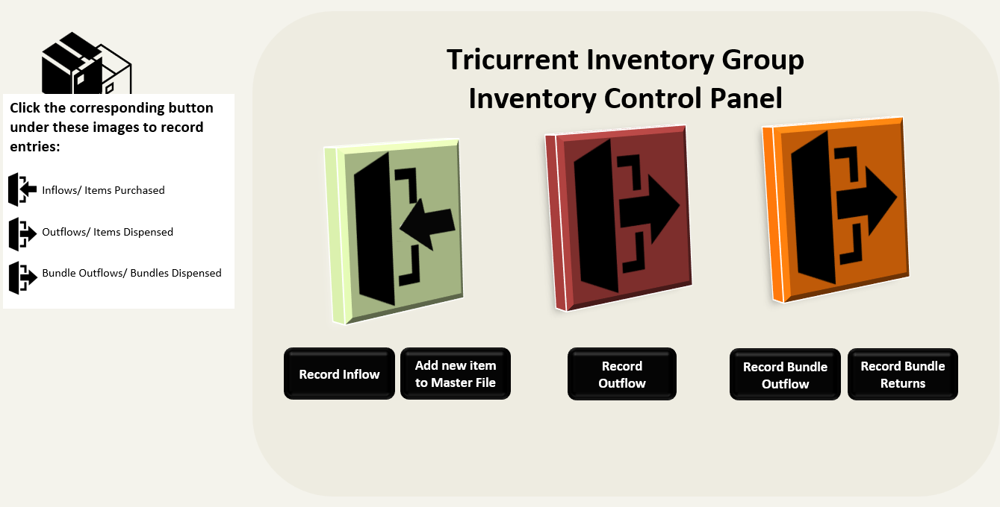
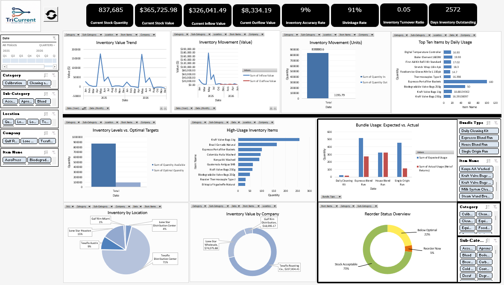
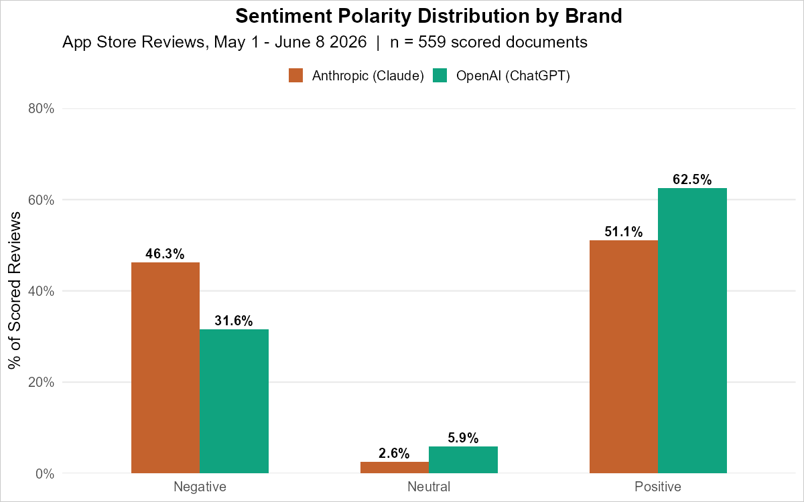
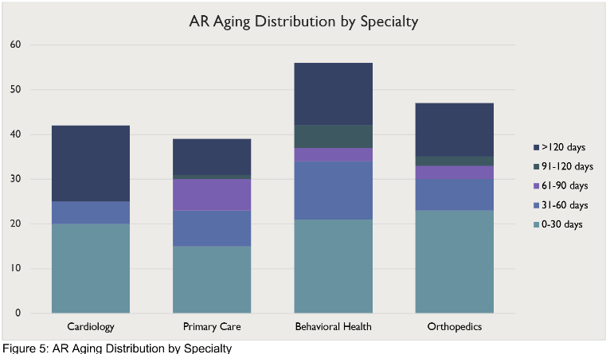
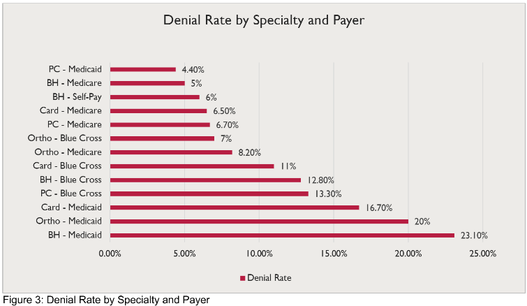

Lead Data Analyst
I build the analytics infrastructure that makes better decisions possible. From financial models and automated pipelines to relational databases and compliance systems, I engineer solutions that didn't exist before.
About
I'm a Lead Data Analyst and analytics engineer based in Tampa, FL, with an MBA in Business Analytics (4.0 GPA) and a track record of building production infrastructure with what the organization already has, rather than buying new tools or outsourcing it.
As the sole analytics resource at Ryze Renal Care, I designed and built the organization's entire data infrastructure from the ground up, including a 400+ SKU inventory management system with FIFO costing across three companies, a connected procure-to-pay automation suite spanning four files and 29 VBA modules, Power Query pipelines that clean QuickBooks exports for financial reporting, a VBA-based intercompany loan reconciliation system, 2 Power Automate apps, and a Flask-based internal documentation and revenue cycle portal. None of it was outsourced. None of it existed before I built it.
My work spans finance, accounting, billing, clinical operations, scheduling, administration, and inventory management simultaneously. I prepare the organization's annual Medicare cost report, working directly from the general ledger to reconcile depreciation schedules, amortization, leasehold capitalization, and intercompany loan balances with the accounting team before submission, alongside monthly QAPI clinical compliance reports and investor-facing analytics presentations. I also write SQL and Python, run NLP analyses in R, and maintain Power BI dashboards.
What I'm genuinely good at is walking into a system that doesn't exist yet and building it end to end, from schema design and API integration to the dashboard a decision-maker actually uses.
Programming
APIs & Integration
Visualization & BI
Automation
Analytics
Experience
Lead Data Analyst
Graduate Assistant
Work
01
Inventory & Procure-to-Pay Automation Suite

Connected Excel VBA system spanning five files and one shared warehouse operation across three fictional companies, covering the full cycle from stock tracking to vendor payment. This portfolio demo recreates the system at 90 SKUs. The inventory side handles FIFO lot costing, multi-step user forms, cycle count scheduling, and bundle usage variance detection comparing expected production usage against actual dispensed quantities net of returns, feeding a Power Pivot data model and a live KPI dashboard with stock reconciliation and reorder tracking. The procurement side auto-generates purchase requisitions from low-stock triggers with duplicate checking, routes them through a finance approval workflow with audit logging, generates vendor POs per company, and reconciles against AP through a staging pipeline. 25 VBA modules drive the inventory system, 4 drive purchase requisitioning, and 2 Power Query pipelines reconcile AP, zero manual handoffs across the full chain.

02
App Store Sentiment Analysis: Anthropic vs OpenAI

Real NLP analysis of 980 US App Store reviews collected via the itunesr R package. Applied AFINN lexicon scoring, NRC emotion classification, TF-IDF weighting, and bigram analysis. Key finding: Claude reviews are 46.3% negative driven by usage limit frustration, versus 31.6% for ChatGPT. Delivered as an R Markdown report and a Shiny-style interactive dashboard.
03
Revenue Cycle SQL Analysis: Cath Health Group


Structured SQL analysis of 800 claims across four service lines for a fictional multi-specialty clinic. Twelve queries covering CTEs, window functions, AR aging buckets, running totals, denial rate trend analysis, and a provider scorecard with three simultaneous RANK() rankings. Built on direct revenue cycle experience restructuring billing operations in a clinical environment.
04
Multi-Entity Financial Reporting Automation
Power Query pipeline that ingests QuickBooks-exported income statement and accounts receivable staging files, scrubs Excel error values, reshapes wide month columns into clean year-over-year P&L and cash-basis views, and auto-derives report line labels through custom text parsing rather than manual relabeling. Paired with a separate VBA-based intercompany loan reconciliation system that fuzzy-matches transactions across five affiliated entities by date, amount, and counterparty text, nets the results into payer and beneficiary summaries, and produces a full exception report for anything that cannot be auto-matched.
05
QAPI Clinical Compliance Reporting Pipeline
Monthly automated reporting system producing structured clinical reports covering anemia management and dialysis adequacy metrics for regulatory submission. Outputs decision-ready documentation for leadership and accreditation review.
06
Digital Operations Platform
Rebuilt staff task management and opening workflows across multiple departments using Power Apps, Power Automate, and SharePoint, replacing static paper checklists with dynamic, trackable digital processes accessible from any device.
07
Scheduling and Payroll Operations Database
Relational Microsoft Access database linking personnel records, shift scheduling, and payroll data, enabling cross-departmental reporting and scheduling automation not previously possible from siloed spreadsheets.
08
Revenue Cycle Documentation Portal
Server-rendered Flask application built as a single modular monolith covering three functional areas, Billing, AR, and AP, under one Accounting umbrella, mirroring the organization's revenue cycle structure rather than splitting into three separate codebases. All content, an SOP library, eight process flowcharts, tracker and matrix references, a KPI dashboard, and the compliance spine, lives in one JSON file with zero database and zero authentication by design, since the portal holds only documentation, blank templates, and de-identified aggregate KPIs, deliberately keeping it outside HIPAA's PHI scope rather than building a security layer the use case does not need. Deploys to Render, Railway, Fly, or Replit out of the box.
09
Anemia Protocol to Inventory Bridge: Cath Health Group
Excel VBA system that converts monthly dialysis lab results into clinical anemia management recommendations, then rolls those recommendations into a medication-quantity forecast inventory can act on directly. Nested formula logic classifies each patient into an iron status and ESA dosing tier against protocol thresholds, automatically flagging mismatched or borderline labs for provider review rather than auto-prescribing. A three-tier PDF export separates the draft nurse review, the finalized clinical recommendations, and a clean inventory-only medication report, so the inventory team never sees raw lab data, only the doses they need to stock.
Research
Hult International Business School
The Impact of ShotSpotter Technology on Gun Crime and Community-Police Relations Across Racial Demographics in Chicago
Explored whether AI-powered gunshot detection technology produced a statistically significant impact on crime levels and community-police relations across different racial groups in Chicago. Integrated public crime datasets, demographic data, and deployment records to evaluate the technology's differential effects. Findings contributed to the broader conversation on algorithmic tools in public safety and equitable policy design.
Education
MBA in Business Analytics
Midwestern State University , Wichita Falls, TX
BBA in Business Analytics, with Distinction
Hult International Business School , Boston, MA
Credentials
Google Business Intelligence Professional Certificate
Google via Coursera
Microsoft Office Specialist in Excel Associate
Microsoft
Contact
I'm always open to new opportunities, interesting problems, and conversations about data, analytics, and building things that matter.